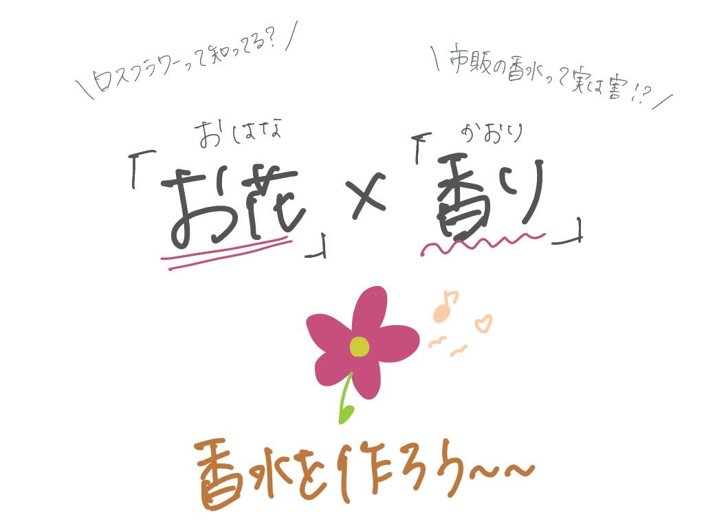
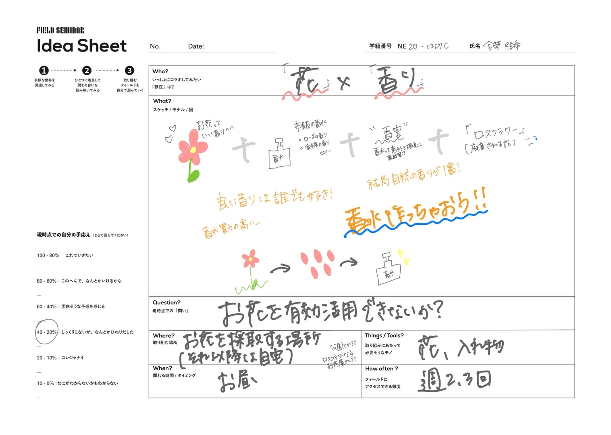
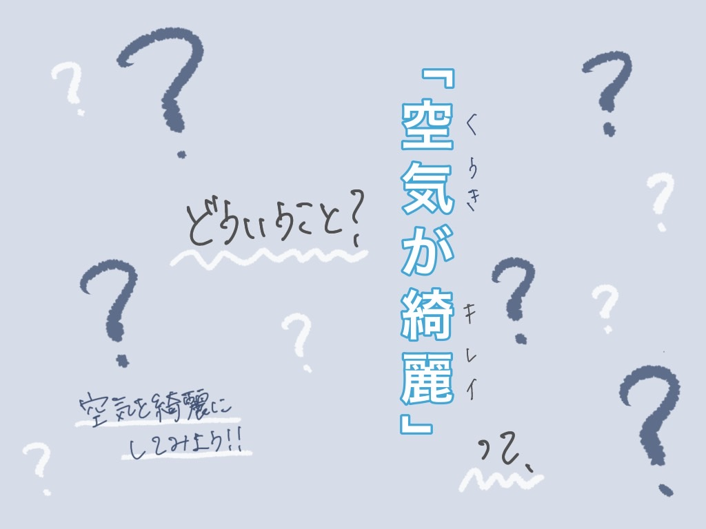
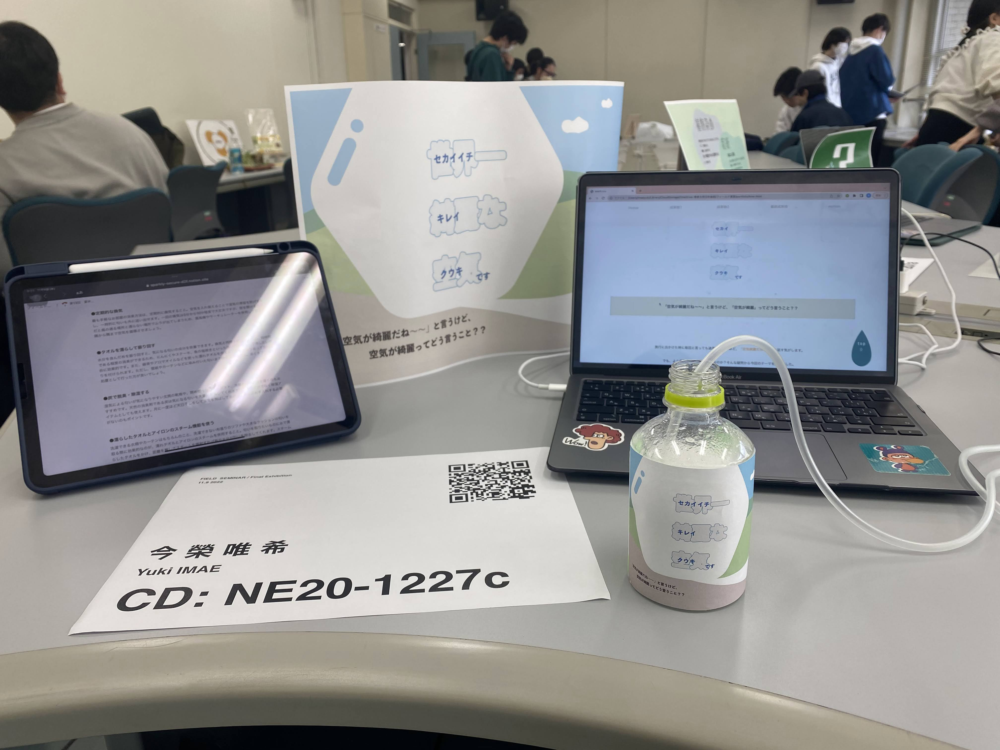

「空気が綺麗だね〜〜」と言うけど、「空気が綺麗」ってどう言うこと？？
旅行に出かけた時に毎回と言っても過言ではないほど、「空気綺麗だね〜〜」と話す気がします。
でも、よく考えたらどう言うことなのか？そんな疑問から今回のテーマを決めました。
最終的に何をしたかというと、「世界一綺麗な空気」を作りました！（真面目です、）
成果物1

~
お花で香水を作ろう
~
キーワード：「お花」「匂い」「ロスフラワー」「収集」
「ロスフラワー」って知ってる？？「市販の香水って実は害」？？というテーマで、
お花が無駄にならない方法を考えました。

-
「ロスフラワー」について
近年SDGsにまつわる文脈で「フードロス（食べ物の廃棄問題）」について耳にすることがあります。
花業界でも同じように、まだ美しい花たちが廃棄されてしまう事実が問題視されています。
新たな価値をつけ、持続可能な市場を維持していくため、廃棄予定の花は「ロスフラワー」と名付けられています。
-
ロスフラワーによる経済損失
これまでのフラワーロス問題による経済損失は、年間約1,500億円といわれています。
これはコロナ禍以前の経済損失なので、コロナ禍ではさらなる経済損失が起こっていると予想されます。
花の廃棄量の多さは以前から起こっていた問題ではありますが、コロナ禍で特に注目されることとなりました。
これを機に、ロスフラワーについて考えてみませんか？
-
市販の香水には有害物質が含まれている可能性
香水の歴史は古く、昔はすべて天然由来の原料で作られていたといいます。
それが、1940年代以降、科学薬品による香水が市場に増え始めました。
この科学薬品には、トラブルを引き起こす、有害な物質も含まれているといいます。
自分だけではなく、その香りを吸い込んだ周囲の方の体調不良を引き起こす可能性もあります。
香水を使用するのであれば、できるだけ天然成分の香水を使用するようにしたいですね。
成果物2

~
「空気が綺麗ってどういうこと」
~空気を綺麗にしてみよう!!~
~
キーワード：「空気」「コバエ」「匂い」
今回は、「空気を綺麗にしたら、コバエを見かけなくなるのではないか」という希望を抱いたテーマとなっております！
夏休み中に実施したものなので、、夏休みはコバエが多く、どうにかしたいと思いました、
そこで！空気を綺麗にしたらコバエはいなくなるのではないだろうか？？
空気を綺麗にするって？？匂いがないこと！？？

-
コバエが住みやすい空間とは
コバエの大量発生は、ある場所に産み付けられた卵がかえり、一斉に羽化することが原因とされています。
つまり、大量発生している付近に卵を産み付けられた可能性があるということです、、
コバエは4～11月ぐらいの期間に多く発生します。
コバエの生息に適した気温は20～30℃、湿度は70％ほどで、卵から成虫になるまでのサイクルが非常に速く、気温や湿度などの条件が整えば、長期間にわたって大量発生を繰り返します。
-
コバエを発生させないために
コバエの発生を防ぐためにできることは、発生が考えられる箇所を清潔に保つことです。
匂いなども原因として挙げられ、つまり、空気を綺麗にすることに繋がります！、
最終成果物
~
「世界一綺麗な空気」です
~
キーワード：「空気」「自然」
成果物1、2で行ってきた集大成として、空気を綺麗にしよう！と考えました。
でも、空気が綺麗ってどう言うこと？？
↓
空気が綺麗とは、大気汚染物質（世界保健機構は(WHO)は、大気汚染物質とは「粒子状物質、一酸化炭素、オゾン、二酸化炭素及び二酸化硫黄」と定義）がない、又は少ないことを指します。
ほこりやちりがなく、体に悪いガスを含んでいない空気のこと！
そしてそれは、味やにおいがなくても「おいしい」と感じるのです！！
-
成果物について
最終成果物として、加湿器を作りました。
ペットボトルとエアポンプで簡単に作ることができます！
成果物1でお花で香水を作ったので、それを活用し、いい匂いのするアロマ加湿器を製作しました。
